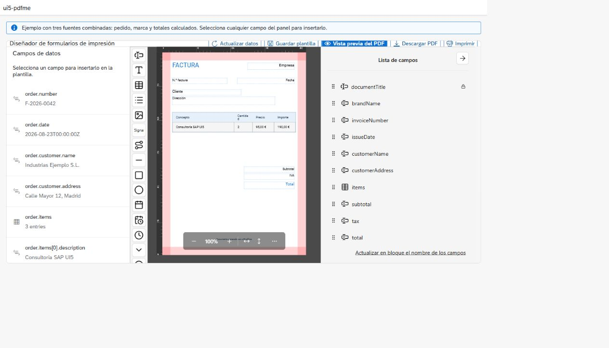
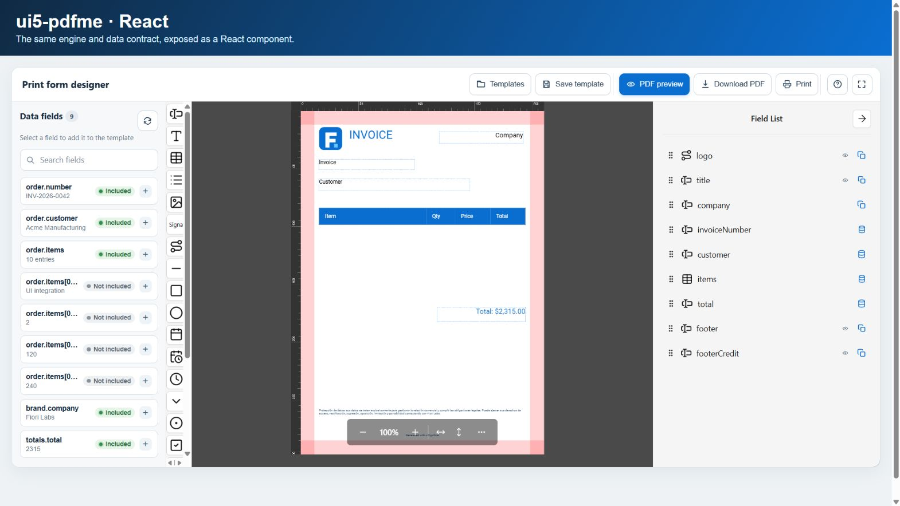

Visual design
Text, tables, lists, images, signatures, SVG, shapes, dates, selectors, and barcodes.
A visual PDF form editor with JSON templates, multiple data sources, OData V2/V4, tables, variables, preview, download, and print.

It lets users visually create templates for any PDF document—such as invoices, orders, labels, certificates, or forms—and automatically populate them with real data from multiple sources. PDFs can be generated efficiently in real time, directly in the browser, or through a deferred workflow.
Text, tables, lists, images, signatures, SVG, shapes, dates, selectors, and barcodes.
JSON, REST, functions, OData V2/V4, and UI5 models with dependencies and fallback values.
A versionable template, PDF preview, download, print, and bytes that the application can reuse.
| Capability | Result |
|---|---|
| Variables | A schema field receives a value from a path or text template. |
| Dynamic tables | A collection is transformed into the JSON matrix expected by pdfme. |
| Multiple documents | mapping.repeat generates one input per record. |
| Extension | Registerable providers, loaders, formatters, and schema plugins. |
There are three main decisions: integrate the engine, persist templates, and—only when the process needs it—generate in the background. SAP/OData belongs to the repository decision: it is one way to implement that catalog.
“I want to integrate the editor and generate a PDF during the current interaction.”
Covers the JavaScript, React, and UI5 adapters, data sources, mappings, templates, events, and immediate generation.
Does not decide: where to persist the catalog or how to run background jobs.
Continue on this page“I want to list, save, version, and publish template definitions.”
Defines how to store template, mapping, and metadata in memory, the browser, REST, OData, or a custom provider.
Does not store: job lifecycle state or replace the engine that renders the final PDF.
Open repositoriesThen choose the OData variant that fits your system: RAP, CAP, classic CDS, or SEGW. They all expose the same repository contract; they are not a fourth concept.
Compare SAP/OData implementations“The PDF must be generated later, with a queue, retries, scheduling, or a worker.”
Covers the asynchronous job from submission and status through rendering, download, and retention; it also includes Docker deployment.
It is not required: for immediate browser preview, download, or print.
Open deferred generationThe relationship: SAP/OData implements the “Template repository” block. Deferred generation can consume an immutable version from that repository, but it is not required for browser generation.
Install the package and choose an adapter. All three use the same template, data-source, and mapping contract.
# Once published on npm
npm install ui5-pdfme
# Latest precompiled release, including the UI5 distribution
npm install $(node -e "fetch('https://api.github.com/repos/jesusfrguz/ui5-pdfme/releases/latest').then(r => r.json()).then(r => console.log(r.assets.find(a => a.name.endsWith('.tgz')).browser_download_url))")import { WebPdfTemplateStudio } from "ui5-pdfme";
const studio = new WebPdfTemplateStudio("#studio", {
template,
dataSources: [{ id: "order", type: "rest", url: "/api/orders/5001" }],
mapping: { fields: { customer: "order.customerName" } },
language: "en",
filename: "order.pdf"
});import { PdfTemplateStudio } from "ui5-pdfme/react";
<PdfTemplateStudio
ref={studioRef}
template={template}
dataSources={dataSources}
mapping={mapping}
language="en"
/><mvc:View xmlns:mvc="sap.ui.core.mvc" xmlns="sap.m" xmlns:pdf="ui5.pdfme">
<pdf:PdfTemplateStudio id="printStudio" height="48rem" />
</mvc:View>DataResolver fetches independent sources in parallel and respects dependsOn. MappingEngine converts declarative paths into pdfme inputs. The adapters only manage lifecycle, events, and presentation.
| Layer | JavaScript/React | UI5/Fiori |
|---|---|---|
| Editor | WebPdfTemplateStudio | ui5.pdfme.PdfTemplateStudio |
| Web data | fetch JSON/REST/OData | UI5 V2/V4/JSON models |
| Generation | @pdfme/generator | @pdfme/generator packaged as a UI5 resource |
| Template | The same pdfme JSON and the same field names | |
Native control, Fiori themes, UI5 events, and access to propagated models. Declare ui5.pdfme in the manifest dependencies. Open the live demo.
An ESM class for Vite or another modern bundler. It exposes pdfme:* DOM events. Open the live demo.

A declarative component with an imperative ref to the studio for registering extensions or generating documents. Open the live demo.

const dataSources = [
{ id: "order", type: "rest", url: "/api/orders/5001" },
{ id: "brand", type: "json", data: { company: "Example Inc." } },
{ id: "totals", type: "function", loader: "totals", dependsOn: ["order"] },
{ id: "products", type: "odata", url: "/odata/v4/Products?$top=50" }
];On the web, OData uses HTTP and normalizes V2 (d.results) and V4 (value) responses. In UI5, prefer the odata provider with modelName and path; this preserves destinations, batch, authentication, and CSRF handling from the application model.
context.data.order when it declares dependsOn: ["order"]. Cycles are rejected.studio.registerLoader("totals", (_source, context) => ({
total: context.data.order.items.reduce((sum, item) => sum + item.amount, 0)
}));const mapping = {
fields: {
customer: "order.customer.name",
reference: { path: "order.reference", defaultValue: "—" },
header: { template: "Order {order.number} · {brand.company}" },
total: { path: "totals.total", formatter: "number",
options: { locale: "en-US", style: "currency", currency: "USD" } },
items: { path: "order.items", formatter: "table",
options: { columns: ["description", "quantity", "amount"] } }
}
};Built-in formatters: raw, json, join, number, date, and table. Custom formatters are registered by name and must be deterministic.
A template is the reusable definition of a document: it describes the pages and the position, size, and style of every element. Invoice, order, or label data is not stored inside the design; it arrives separately, and the mapping decides which value fills each field.
| Part | Responsibility and example |
|---|---|
basePdf | Defines the size, margins, and background; for example, A4 at 210 × 297 mm with 12 mm margins. It can be a blank page or an imported PDF. |
schemas | Contains one array per page and, inside each array, the fields that will be drawn. The first position represents page 1. |
| Schema | Describes a field—such as text, a table, an image, or a QR code—through its identifier, type, position, dimensions, initial content, and style. |
mapping.fields | Connects the schema name to a data path, text template, or registered formatter; for example, customer: "order.customer". |
name must be unique and stable across all pages. It is the key that joins the design to mapping.fields; do not use a translated label that may change as an identifier.const template = {
basePdf: { width: 210, height: 297, padding: [12, 12, 25, 12] },
schemas: [[
{ name: "title", type: "text", position: { x: 20, y: 18 },
width: 90, height: 12, content: "INVOICE", readOnly: true,
fontSize: 22 },
{ name: "customer", type: "text", position: { x: 20, y: 42 },
width: 130, height: 10, content: "Customer",
showLabel: true, label: "Customer" },
{ name: "items", type: "table", position: { x: 20, y: 68 },
width: 170, height: 70, content: "[]",
head: ["Description", "Quantity", "Price"] },
{ name: "total", type: "text", position: { x: 120, y: 150 },
width: 70, height: 10, content: "$0.00",
showLabel: true, label: "Total", alignment: "right" },
{ name: "footer", type: "text", position: { x: 20, y: 278 },
width: 170, height: 6,
content: "Page {currentPage} of {totalPages}",
readOnly: true, fixedPosition: true,
repeatOnEveryPage: true, alignment: "center" }
]]
};
const mapping = {
fields: {
customer: "order.customer",
items: {
path: "order.items",
formatter: "table",
options: { columns: ["description", "quantity", "price"] }
},
total: {
path: "order.total",
formatter: "number",
options: { locale: "en-US", style: "currency", currency: "USD" }
}
}
};With data such as { order: { customer: "Acme Inc.", items: [...], total: 1234.5 } }, the title and footer remain static, while customer, items, and total are resolved for every PDF. The table formatter converts the collection into rows, and number produces, for example, $1,234.50 according to the locale configuration.
| Type | Definition and use |
|---|---|
| Static | Keeps its content and has no entry in mapping.fields. Use it for titles, instructions, logos, and legal text. |
| Connected | Its name appears in mapping.fields. The designer shows Value from data and lets the user choose an available path. Use it for customer, date, amount, address, or any changing value. |
| Collection | Uses a table schema and the table formatter with an explicit column order. It is suitable for order lines, transactions, or listings. |
| Fixed and repeated | Enables fixedPosition and, optionally, repeatOnEveryPage. It is useful for headers, footers, and Text data that must keep its position; repeated static text supports {currentPage} and {totalPages}. |
Creates an empty A4 page. This is the simplest option when the document originates in the designer.
Turns every page of a local PDF into the design background and lets users place fields on top. The file must be a valid PDF.
Retrieves a saved template. Search covers name, description, and tags; users can also filter by status and repository.
The data panel lets users insert fields and tables from resolved samples. Fields added from the palette start as static; fields inserted from the data panel are connected automatically. Before saving, generate a preview with empty values, long text, and tables containing both few and many rows.
await studio.saveTemplateRecord({
name: "Sales invoice · United States",
description: "English A4 invoice with tax and legal footer",
tags: ["sales", "invoice", "en"],
status: "draft",
version: "3",
metadata: { dataContractVersion: "2", language: "en" }
});
const published = await studio.listTemplates({
search: "invoice",
status: "published"
});
await studio.loadTemplate("invoice-en-v3", {
repositoryId: "backend"
});The first save asks for metadata; subsequent saves update the active record. In production, store the template and its mapping together, and also record the data-contract version, language, author, status, and date. Treat a published version as immutable: create a new version to change it and retain the previous one for historical reprints.
See the visual workflow in the user guide and configure memory, localStorage, REST, OData, or functions in the Template catalog and repositories guide.
The studio instance coordinates four operations: resolving data, mapping it to pdfme inputs, editing or persisting the template, and producing the PDF. JavaScript and React use WebPdfTemplateStudio; the UI5 control exposes the same concepts through native methods and events.
const studio = new WebPdfTemplateStudio("#studio", {
template,
dataSources,
mapping,
autoResolve: false,
filename: "invoice-5001.pdf"
});
// Register extensions before resolving sources that use them.
studio
.registerLoader("totals", totalsLoader)
.registerFormatter("vat", vatFormatter);
const data = await studio.refreshData(); // Data grouped by source id.
const inputs = studio.getInputs(); // One object per PDF/document.
const bytes = await studio.generate(); // Uint8Array with the final PDF.
console.info(data.order, inputs.length, bytes.byteLength);
studio.destroy(); // When unmounting a framework-free JavaScript integration.generate() resolves data automatically when inputs do not exist yet. In controlled workflows, calling refreshData() first is usually preferable because the application can inspect or validate data and inputs before generation. Promises reject with the original error; listen to pdfme:error for observability, but keep try/catch wherever the application must recover.
| Method | Result | Use |
|---|---|---|
configure(partial) | The same instance. | Merges a partial configuration into the current one. A new template updates the designer; new sources resolve again when autoResolve is enabled. |
refreshData() | Promise<object> | Runs sources, respects their dependencies, recalculates inputs, and emits dataResolved. |
getResolvedData() | object | null | Returns the latest data snapshot, grouped by each source id. |
getInputs() | object[] | null | Returns the mapped inputs. It may contain multiple items when mapping.repeat is used. |
registerDataProvider(type, provider) | The same instance. | Adds a source type. Call it before resolving a source with that type. |
registerLoader(name, loader) | The same instance. | Registers a function referenced by a function data source. |
registerFormatter(name, formatter) | The same instance. | Registers a transformation referenced from mapping.fields. |
| Method | Result | Use |
|---|---|---|
getTemplate() | Current pdfme template. | Reads the latest design, including changes that have not been persisted yet. |
startBlankTemplate() | New A4 template. | Clears the active record and starts a blank design. |
importPdfTemplate(file) | Promise<template> | Uses every page of a PDF File, Blob, or byte array as the background. |
listTemplates(query) | Promise<record[]> | Searches by text, status, or repositoryId. At least one configured repository is required. |
getTemplateRecord(id, options) | Promise<record> | Fetches a complete record without loading it into the designer. |
loadTemplate(idOrRecord, options) | Promise<record> | Loads the template and mapping; stored sources apply only with applyStoredDataSources: true. |
saveTemplateRecord(metadata, options) | Promise<record> | Creates or updates the active record and emits the persistence confirmation. |
openTemplateCatalog() | Visual catalog. | Opens search, filters, blank-template creation, and PDF import. |
generate() | Promise<Uint8Array> | Validates the template, prepares fixed fields, and generates the PDF without opening additional UI. |
preview(), download(), print() | Promise<Uint8Array> | Generate and then display, download, or send the PDF to the print dialog. Silent printing is unavailable in a standard browser. |
openHelp() | Help dialog. | Opens the quick guide and exposes the configured manual URL. |
In JavaScript, events are CustomEvent instances dispatched on the root element and their payload is stored in event.detail. The same information is available through onEventName configuration callbacks; React uses these callbacks and a ref to call the imperative API.
const host = document.querySelector("#studio");
host.addEventListener("pdfme:dataResolved", ({ detail }) => {
console.info("Documents prepared", detail.inputs.length);
});
host.addEventListener("pdfme:generated", ({ detail }) => {
console.info("PDF generated", detail.bytes.byteLength, detail.blob.type);
});
host.addEventListener("pdfme:error", ({ detail }) => {
reportError(detail.operation, detail.error);
});
// Valid alternative in JavaScript and as React adapter props:
studio.configure({
onTemplateSaved: ({ record }) => console.info(record.id),
onError: ({ operation, error }) => reportError(operation, error)
});UI5 does not use event.detail: register the handler with attach<Event> or in the XML view and read each value with getParameter().
const studio = this.byId("printStudio");
studio.attachDataResolved((event) => {
const inputs = event.getParameter("inputs");
MessageToast.show(`${inputs.length} document(s) prepared`);
});
studio.attachGenerated((event) => {
const blob = event.getParameter("blob");
console.info("PDF", blob.size, blob.type);
});
studio.attachError((event) => {
const operation = event.getParameter("operation");
const error = event.getParameter("error");
this.handlePdfError(operation, error);
});| Web event | UI5 event | Payload | When it fires |
|---|---|---|---|
pdfme:templateChange | templateChange | template | After the design changes. It can fire frequently; avoid persisting every change. |
pdfme:templateSave | templateSave | template | When the designer returns its template through the Save action. It does not confirm a repository write. |
pdfme:fieldInsert | fieldInsert | fieldName, path | After a connected field is inserted from the data panel. |
pdfme:templatesListed | templatesListed | templates; Web also includes query | When the visual catalog finishes listing. On Web it is emitted by the WebTemplateCatalog root. |
pdfme:templateLoaded | templateLoaded | record | After the requested record is applied to the designer. |
pdfme:templateSaved | templatePersisted | record | Only after the repository confirms the save. |
pdfme:dataResolved | dataResolved | data, inputs | After every source is resolved and mapping is complete. |
pdfme:generated | generated | bytes, blob | After every successful generation, including preview, download, and print. |
pdfme:help | help | url | When the help dialog opens. |
pdfme:error | error | operation, error | When a managed operation such as resolve, generate, import, list, or save fails. |
templateSave to obtain the design from the editor and templateSaved/templatePersisted to confirm that the backend or local storage accepted it. For audit logs, record the record identifier and version, never personal data or the complete PDF contents.A repository persists reusable template definitions; it is not the generation queue or the storage for produced PDFs. The visual catalog searches those definitions and opens them in the editor.
Included adapters are memory, localStorage, rest, odata, and function.
templateRepositories: [{
id: "browser",
type: "localStorage",
storageKey: "my-app.templates"
}, {
id: "backend",
type: "rest",
url: "/api/templates"
}]On Web, REST uses collection/detail GET and POST/PUT. OData V4 uses POST/PATCH; with odataVersion: 2, the provider switches filtering, count, and update semantics to V2. Both follow next links up to maxPages. In Fiori, provide modelName and path to preserve destinations, batch, and CSRF handling. Node, PostgreSQL, and CAP/OData examples are included.
Open the complete catalog and repositories guide. If the repository will run as OData on SAP, also use the RAP/CAP/CDS/SEGW chooser.
npm ci
npm test
npm run build
npm run docs:dev
npm run example:js
npm run example:reactnpm run build creates the precompiled UI5 artifact. Vite bundles the web entry points and their WASM resources. npm run build:pages assembles the documentation and the live UI5, JavaScript, and React demos in .pages/; the workflow deploys that static artifact. Documentation stylesheets and JavaScript receive content fingerprints so that every deployment invalidates stale cached versions.
Test coverage includes concurrent/dependent resolution, cycles, fallbacks, OData V2/V4, mappings, tables, repetition, and final PDF creation.
The repository includes AGENTS.md and specialized recipes so an agent can install the library, connect data, create templates, and run consistent validation.
Main agent contract · Recipe index · Template creation · Checklist
| Symptom | Check |
|---|---|
| Empty data panel | Register loaders before refreshData; check IDs and dependsOn. |
| Empty field | The schema name must match the key in mapping.fields. |
| OData returns an unexpected object | Distinguish entity/collection and check V2 d.results or V4 value. |
| WASM not found | Use a modern bundler and preserve asset/base-path URLs. |
| UI5 does not load the library | Declare ui5.pdfme in the manifest and check the npm/UI5 graph. |
| Table overflows | Test large datasets and use a flexible base PDF with suitable margins. |